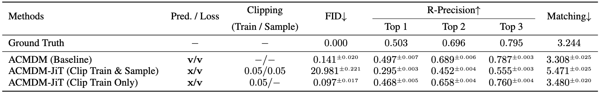

TL;DR. JiT-style clean sample prediction with velocity loss works well for text-to-motion generation, but clipping during sampling ruins the final denoising steps. We find that this degrades FID and leads to unnatural vibrations in the generated motion. Keep the training stabilized with clipping, but let the sampler run unclipped to eliminate high-frequency noise.
The JiT paper [1] argues that diffusion and flow models should go back to predicting clean data instead of noise or velocity, while keeping the loss defined on the velocity.
In human motion generation you can already see all three prediction targets in use. MotionDiffuse [2] sticks to the classic DDPM setup and predicts the added noise $\boldsymbol{\epsilon}$ directly in pose space during denoising. Latent-space methods such as Motion Latent Diffusion (MLD) [3] follow the same idea but run diffusion in a compressed VAE latent and still learn to predict $\boldsymbol{\epsilon}$ there. Human Motion Diffusion Model (MDM) [4], in contrast, predicts the clean motion $\mathbf{x}$ at every step, which makes it easy to attach geometric losses on joint positions and velocities. ACMDM [5] then adopts a flow-matching view and trains the network to output a continuous velocity field $\mathbf{v}$ that transports Gaussian motion to clean trajectories.
In this post, we take that ACMDM setup and push it back toward the JiT regime: the model predicts clean motion, the training loss is still on velocity, and the flow field is recovered analytically. The rest of the story is about how to make this work in practice and what changes, if anything, when you bring JiT's "just predict $\mathbf{x}$" philosophy into a modern motion diffusion model.
JiT’s objective: predict $x$, train in $v$-space
At the heart of JiT [1] is a very simple loss. The model lives in a continuous-time diffusion (or flow-matching) setup where a noisy sample $\mathbf{z}_t$ is obtained by interpolating between clean data $\mathbf{x}$ and Gaussian noise $\boldsymbol{\epsilon}$:
JiT insists that the network should directly predict a clean sample $\mathbf{x}_\theta(\mathbf{z}_t, t)$, but the loss is defined on the velocity. The training objective is
This is exactly the “$x$-pred + $v$-loss” configuration used in JiT: the network always outputs a clean sample, and the flow field used for training and sampling is obtained analytically from that prediction.
Making the JiT loss work in practice
To make this objective behave in a real training codebase, we only follow two small tricks from JiT [1].
Trick 1 (clip $(1 - t)$).
In the JiT formulation, both the loss and the reconstruction of $\mathbf{v}_\theta$ contain explicit divisions by $(1 - t)$. As $t \to 1$, the factor $1/(1-t) \to \infty$, and a few near-terminal samples can dominate the loss. JiT simply clips the denominator in implementation, replacing
$$1 - t \mapsto \max(1 - t,\, \tau)$$
everywhere it appears inside $1/(1-t)$, with a fixed $\tau = 0.05$. We apply exactly the same clipping in our motion version so that the loss scale stays reasonable.
Trick 2 (change the time sampling).
JiT also avoids drawing $t$ too close to 1 in the first place. Instead of sampling $t \sim \mathcal{U}[0,1]$, it uses a logit–normal schedule
with $\mu = -0.8$ and $\sigma = 0.8$ on ImageNet. This shifts most training points toward moderately noisy states where $1-t$ is not tiny. We reuse the same $(\mu,\sigma)$ for motion, so between clipping and this time schedule the JiT loss stays numerically well-behaved without further modifications.
Results: clipping at sampling hurts motion quality

Table 1. Text-conditioned motion generation with ACMDM on HumanML3D under different prediction targets and clipping schemes. Clipping $(1 - t)$ at sampling severely degrades quality, while JiT-style x-prediction with v-loss and clipping only during training slightly improves over the original velocity baseline.
ACMDM (Baseline)
ACMDM-JiT (Clip Train & Sample)
ACMDM-JiT (Clip Train Only)
Let us now look at what all of this does to actual motion quality on HumanML3D. Table 1 compares several variants of ACMDM that only differ in how they parameterize the flow and how they treat clipping during training and sampling. All models use the same deterministic sampler: a 50-step ODE solver that runs Heun's method for every step except the very last one, which is a single Euler step. With this setup, the network is queried on a fixed uniform grid
The last two evaluations happen at $t \approx 0.96$ and $t \approx 0.98$, so the smallest noise level the model ever sees at sampling time is $1 - t \approx 0.02$.
If we take JiT's recipe literally and plug it into ACMDM, we get the configuration labelled ACMDM-JiT (Clip Train & Sample): predict $\mathbf{x}$, train with a velocity loss, and apply the same clipping $(1 - t) \mapsto \max(1 - t, 0.05)$ in both training and sampling. This row in Table 1 fails badly, with a very large FID and much lower R-Precision than the original velocity baseline. The time grid above makes the failure easy to see. For the last two evaluation points $\textbf{0.96, 0.98}$ we have
\[
1 - t =
\begin{cases}
0.04 \mapsto 0.05, & t = 0.96,\\[2pt]
0.02 \mapsto 0.05, & t = 0.98,
\end{cases}
\]
so both steps are forced to use the same effective noise scale $1 - t = 0.05$ even though the true values should be $0.04$ and $0.02$. Because the sampler converts $\mathbf{x}_\theta$ to a velocity via $\mathbf{v}_\theta = (\mathbf{x}_\theta - \mathbf{z}_t)/(1 - t)$, this clipping shrinks the last two velocities by factors $0.04/0.05$ and $0.02/0.05$. The final updates are therefore too weak, the denoising process stops early, and a small amount of high-frequency noise is left in the motion. In motion space, this residual noise shows up as visible jitter across the whole body, creating unnatural vibrations throughout the sequence, even when the overall trajectory still roughly matches the text prompt.
The simplest fix is to stop clipping during sampling but keep JiT-style clipping during training. This is the setting marked ACMDM-JiT (Clip Train Only) in Table 1: it still applies $(1 - t) \mapsto \max(1 - t, 0.05)$ inside the loss, but it always uses the true value of $1 - t$ when converting $\mathbf{x}_\theta$ into a velocity at sampling time. In this configuration, even at $t = 0.98$ the factor $1/(1 - t)$ is only $50$, so the division stays numerically stable and there is no need for a hard floor during inference. With this change, the model finally gets to use the very last low-noise steps at test time. Quantitatively, FID drops from a catastrophic value to a number that is slightly better than the original velocity baseline, and the R-Precision scores recover. Qualitatively, the visible jitter is largely gone: the whole body moves smoothly.
Wrapping up: If you want to try this
This post provides a starting point for testing the JiT idea on models beyond images. We confirmed that the recipe transfers well to motion generation, provided we avoid clipping during sampling. Although our experiments used a relatively small backbone, we expect the benefits to extend to larger models and other motion diffusion architectures. We look forward to seeing further explorations in these directions!
If you'd like to try this setup yourself, check out our
code on GitHub!
Feel free to reach out via email, Twitter, or GitHub if you have any questions, comments, or feedback.
References
Tianhong Li and Kaiming He.
Back to Basics: Let Denoising Generative Models Denoise.
arXiv preprint arXiv:2511.13720, 2025.
arXiv
Mingyuan Zhang, Zhongang Cai, Liang Pan, Fangzhou Hong, Xinying Guo, Lei Yang, and Ziwei Liu.
MotionDiffuse: Text-Driven Human Motion Generation With Diffusion Model.
IEEE Transactions on Pattern Analysis and Machine Intelligence (TPAMI), 46(6): 4115–4128, 2024.
TPAMI
Xin Chen, Biao Jiang, Wen Liu, Zilong Huang, Bin Fu, Tao Chen, Jingyi Yu, and Gang Yu.
Executing Your Commands via Motion Diffusion in Latent Space.
In CVPR, 2023.
CVPR OpenAccess
Guy Tevet, Sigal Raab, Brian Gordon, Yonatan Shafir, Daniel Cohen-Or, and Amit H. Bermano.
Human Motion Diffusion Model.
In ICLR, 2023.
OpenReview